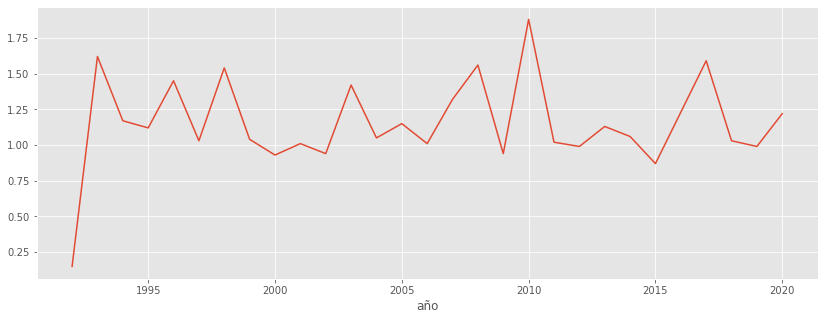
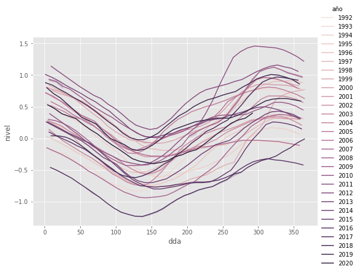
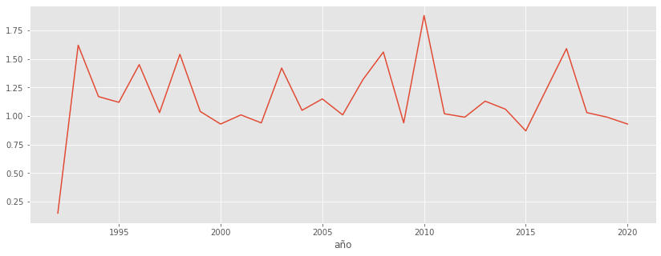
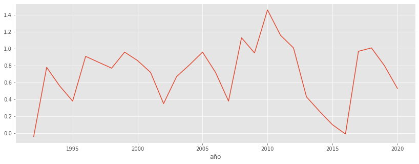

Niveles de agua del Lago Cocibolca basado en altimetria satelital¶
1/11/2021
IPAD archivo KML con puntos del “track” del sensor altimetrico
https://appliedsciences.nasa.gov/join-mission/training/english/mapping-and-monitoring-lakes-and-reservoirs-satellite-observations
https://appliedsciences.nasa.gov/our-impact/news/africa-flores-breakthrough-scientist
%matplotlib inline
import pandas as pd
import geopandas as gpd
import matplotlib.pyplot as plt
import matplotlib
import seaborn as sns
matplotlib.style.use('ggplot')
Acceder e ingerir los datos de la web¶
kmlurl = "https://ipad.fas.usda.gov/rssiws/ggeoxml/351_Nicaragua.kml"
gpd.io.file.fiona.drvsupport.supported_drivers['KML'] = 'rw'
See this good reference for reading KMLs and their complexities: https://gis.stackexchange.com/questions/328525/geopandas-read-file-only-reading-first-part-of-kml
gdf = gpd.read_file(kmlurl, driver='KML')
/home/mayorga/miniconda/envs/nica_natur_jb/lib/python3.8/site-packages/geopandas/geodataframe.py:422: RuntimeWarning: Sequential read of iterator was interrupted. Resetting iterator. This can negatively impact the performance.
for feature in features_lst:
len(gdf)
190
gdf.tail()
| Name | Description | geometry | |
|---|---|---|---|
| 185 | POINT (-85.63035 0.00000) | ||
| 186 | POINT (-85.62943 0.00000) | ||
| 187 | POINT (-85.62851 0.00000) | ||
| 188 | POINT (-85.62759 0.00000) | ||
| 189 | Topex/Jason Pass | LINESTRING (-85.80074 11.56268, -85.79982 11.5... |
gdf.geometry.type.value_counts()
Point 189
LineString 1
dtype: int64
fname = 'lake0351.10d.2.smooth.txt'
url = f"https://ipad.fas.usda.gov/lakes/images/{fname}"
url
'https://ipad.fas.usda.gov/lakes/images/lake0351.10d.2.smooth.txt'
Try using
infer_datetime_formatordate_parserCambiar los nombres de las columnas a espanol
df0 = pd.read_csv(url, names=['fecha', 'hora', 'minuto', 'nivel', 'nivel_egm2008'],
skiprows=12, index_col=False, sep='\s+')
len(df0)
1098
df0.tail()
| fecha | hora | minuto | nivel | nivel_egm2008 | |
|---|---|---|---|---|---|
| 1093 | 20200908 | 19 | 38 | 0.15 | 32.18 |
| 1094 | 20200918 | 17 | 37 | 0.24 | 32.27 |
| 1095 | 20200928 | 15 | 35 | 0.29 | 32.32 |
| 1096 | 20201008 | 13 | 34 | 0.32 | 32.35 |
| 1097 | 20201018 | 11 | 32 | 0.40 | 32.43 |
df0.dtypes
fecha int64
hora int64
minuto int64
nivel float64
nivel_egm2008 float64
dtype: object
Pre-procesar y suplementar los datos ingeridos¶
df = df0[(df0['fecha'] != 99999999) & (df0['nivel'] < 999)].copy()
len(df)
1068
# Time *must* be zero-padded in conversion from integer to string
df.insert(1, 'FechaTiempo',
pd.to_datetime(
df['fecha'].map(str)
+ df['hora'].map(lambda nbr: "{0:02d}".format(nbr))
+ df['minuto'].map(lambda nbr: "{0:02d}".format(nbr)),
format='%Y%m%d%H%M')
)
df.drop(['fecha', 'hora', 'minuto'], axis=1, inplace=True)
df.head()
| FechaTiempo | nivel | nivel_egm2008 | |
|---|---|---|---|
| 0 | 1992-10-02 14:54:00 | -0.19 | 31.84 |
| 1 | 1992-10-12 12:52:00 | -0.04 | 31.99 |
| 2 | 1992-10-22 10:51:00 | -0.07 | 31.96 |
| 3 | 1992-11-01 08:49:00 | -0.05 | 31.98 |
| 4 | 1992-11-11 06:48:00 | -0.05 | 31.98 |
df['año'] = df.FechaTiempo.dt.year
df['mes'] = df.FechaTiempo.dt.month
df['dia'] = df.FechaTiempo.dt.day
df['dda'] = df.FechaTiempo.dt.dayofyear
Explorar patrones temporales¶
df.plot(x='FechaTiempo', y='nivel', ylim=(-1.5, 1.5), figsize=(14, 7))
plt.ylabel('desviación de elevación (m)')
plt.xlabel('fecha');

sns.boxplot(data=df, x='mes', y='nivel', color='g');
plt.ylim(-1.5, 1.5)
plt.xlabel('mes')
plt.ylabel('desviación de elevación (m)');

Plot of desvaciones de elevacion vs doy (dia del an-o, dda), labelled by year
TODO: Change x axis labelling to show months rather than just dda integers
# df.plot.scatter(x="dda", y="nivel", c="año");
# markers=True, dashes=False: these have no effect
palette = sns.cubehelix_palette(light=.9, n_colors=29)
sns.relplot(data=df, x="dda", y="nivel", hue="año", kind='line', palette=palette,
height=5, aspect=1.5);

dfg = df.groupby('año')
dfheightrange = dfg.nivel.max() - dfg.nivel.min()
dfheightrange.plot(figsize=(14,5));

dfg.nivel.max().plot(figsize=(14,5));

dfg.nivel.min().plot(figsize=(14,5));